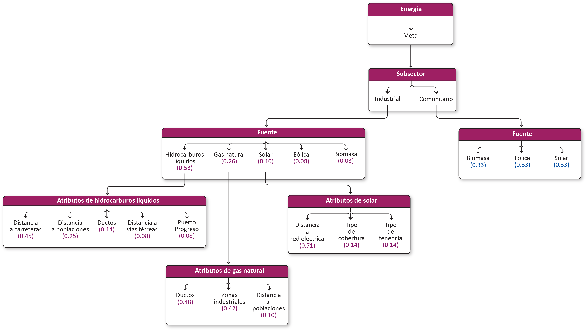

Energía¶
Meta¶
Consolidar al Estado de Yucatán como productor de energía limpia y confiable para asegurar la suficiencia energética mediante criterios de uso sostenible del territorio, certidumbre jurídica y desarrollo ordenado e incluyente del sector, que permitan aprovechar los recursos para crear un valor económico, ambiental y social.
Modelo AHP del sector energía
 Nota Valores en morado son los pesos o importancias ya realizadas. Valores en azul son las fuentes de energía que faltan por ponderar.
Subsectores¶
Energía industrial¶
Fuentes de energía a escala industrial.
Energía comunitaria¶
Fuentes de energía utilizadas en las comunidades.
Fuentes¶
Energía industrial¶
| Criterio | Definición |
|---|---|
| Hidrocarburos líquidos | Consumo y almacenamiento de hidrocarburos líquidos. Plantas que utilizan diesel o combustóleo para generar energía. Terminales de almacenamiento y reparto. |
| Gas natural | Transporte de gas natural por gasoductos y vehículos terrestres. Terminales de almacenamiento y centrales eléctricas. Uso de gas comprimido por empresas. |
| Solar | Instalaciones industriales que aprovechan la irradiación solar como fuente de energía. |
| Eólica | Instalaciones de generación de energía, mayores a 0.5 MW. |
| Biomasa | Proyectos diseñados que utilizan material biológico, para conversion en energía utilizable. Incluye los desechos de granjas porcícolas para producir energía eléctrica. |
Hidrocarburos líquidos¶
Consumo y almacenamiento de hidrocarburos líquidos. Plantas que utilizan diesel o combustóleo para generar energía. Terminales de almacenamiento y reparto.
| Atributos | Definición |
|---|---|
| Carreteras | Distancia a carreteras. |
| Poblaciones | Distancia a asentamientos humanos. |
| Ductos | Red de ductos para transportar hidrocarburos líquidos. |
| Vías férreas | Distancia a vías férreas. |
| Puerto Progreso | Terminal marítima |
Carreteras¶
Distancia a carreteras.
Poblaciones¶
Distancia a asentamientos humanos.
Ductos¶
Red de ductos para transportar hidrocarburos líquidos.
Vías férreas¶
Distancia a vías férreas.
Puerto Progreso¶
Gas natural¶
Transporte de gas natural por gasoductos y vehículos terrestres. Terminales de almacenamiento y centrales eléctricas. Uso de gas comprimido por empresas.
| Atributos | Definición |
|---|---|
| Ductos | Red de ductos para transportar hidrocarburos líquidos. |
| Zonas industriales | Zonas industriales que demandan gas natural. |
| Poblaciones | Distancia a asentamientos humanos. |
Ductos¶
Red de ductos para transportar hidrocarburos líquidos.
Zonas industriales¶
Zonas industriales que demandan gas natural.
Poblaciones¶
Distancia a asentamientos humanos.
Solar¶
Instalaciones industriales que aprovechan la irradiación solar como fuente de energía.
| Atributos | Definición |
|---|---|
| Distancia a red eléctrica | Distancia a líneas de transmisión y subestaciones. |
| Cobertura | Tipo de vegetación. |
| Tenencia | Áreas ejidales (comunitaria o parcelada) y no ejidales. |
Distancia a red eléctrica¶
Distancia a líneas de transmisión y subestaciones.
Cobertura¶
Tipo de vegetación.
Tenencia¶
Áreas ejidales (comunitaria o parcelada) y no ejidales.
Eolica¶
Instalaciones de generación de energía, mayores a 0.5 MW.
Biomasa industrial¶
Proyectos diseñados que utilizan material biológico, para conversion en energía utilizable. Incluye los desechos de granjas porcícolas para producir energía eléctrica.
Energía comunitaria¶
| Criterio | Definición |
|---|---|
| Biomasa comunitaria | Uso de leña y carbón vegetal como combustible. |
| Eólica comunitaria | Generación de energía en las comunidades, a través de la energía del viento. |
| Solar comunitaria | Generación distribuída de energía en las comunidades, a través de la energía solar. |
Biomasa comunitaria¶
Uso de leña y carbón vegetal como combustible.
Eólica comunitaria¶
Generación de energía en las comunidades, a través de la energía del viento.
Solar comunitaria¶
Generación distribuída de energía en las comunidades, a través de la energía solar.